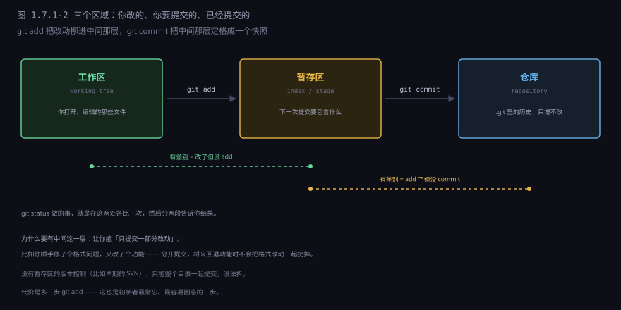
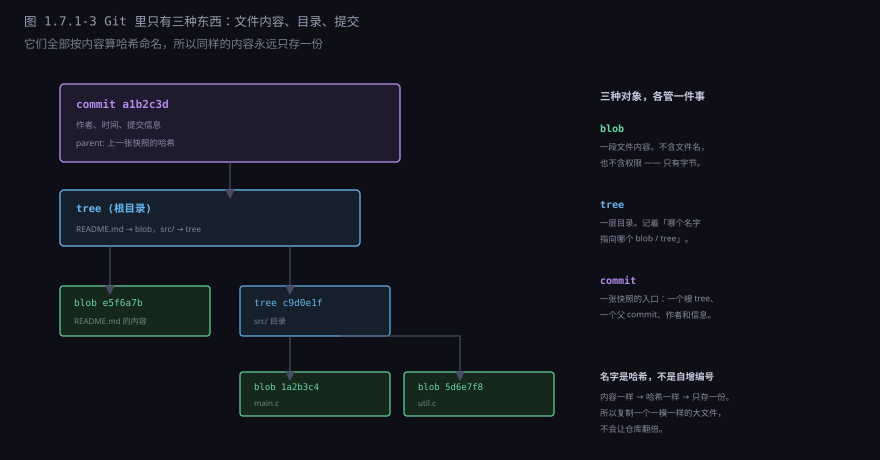
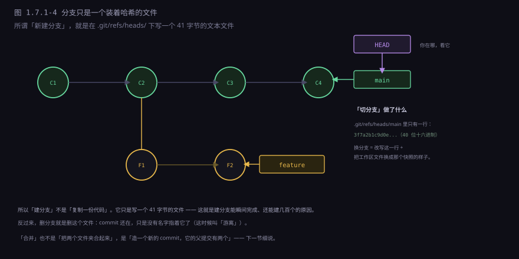
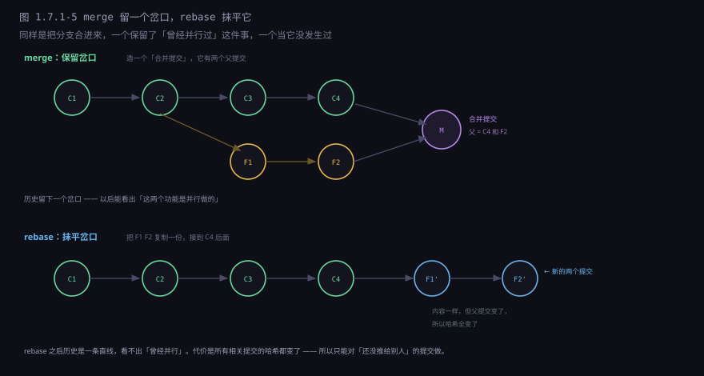
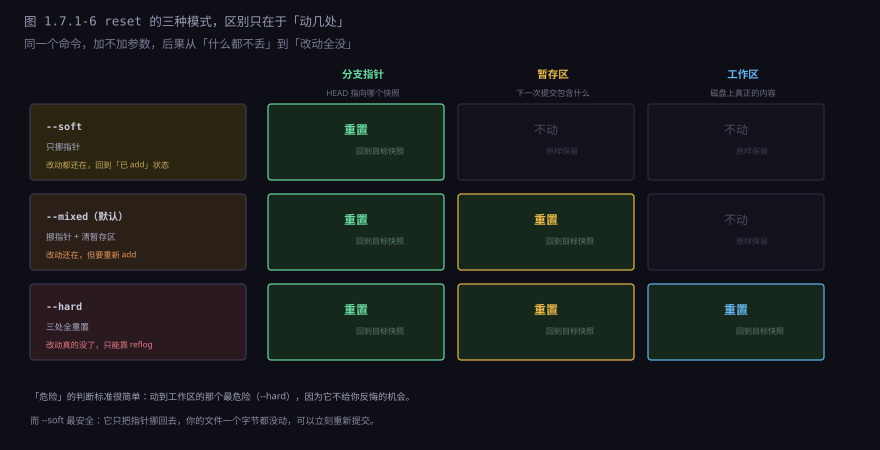

约 0.6 万字 · 6 张图 · 读完你能说清 Git 到底存了什么、 分支为什么能瞬间创建、reset 的三种模式各丢了什么， 以及为什么「把密钥删掉再提交」根本没用
项目、项目-备份、项目-final、
项目-final-真的最终、项目-用这个。
大部分人第一次听说 Git 时，会以为它记录的是「每次改了哪几行」—— 像一个不断追加的补丁堆。这个印象来自更早的工具（CVS、SVN）， 它们确实是这么干的：存一份原始文件，之后每次只存差异。
这两种设计的分歧，会在几个具体场景里暴露出来：
| 场景 | 存差异 | 存快照 |
|---|---|---|
| 取第 100 版 | 要把前 99 个补丁全叠一遍 | 直接拿那一份 |
| 切分支 | 要算出「从当前状态到目标状态」的差异再应用 | 改一个指针，完成 |
| 比对任意两版 | 要先把两边都还原出来 | 两边都是现成的，直接比 |
| 某一版损坏 | 后面所有版本全废 | 只影响那一版 |
| 看某行是谁改的 | 直接查补丁，快 | 要往前推导，稍慢 |
注意最后一行：快照方案唯一的劣势，恰好是「追溯某一行」这件事。
这就是为什么 git blame 比 svn blame 慢一点——
它得从当前快照出发，一层层往前比对，才能确定某一行是哪个提交引入的。
这不是实现不好，是数据结构决定的代价。
但换来的好处大得多：分支操作变成了 O(1)。 这一点在下一节会展开——它是 Git 能普及的根本原因。
Git 里有三个地方放东西，初学者最容易在这里迷路。

git add 是把改动挪进中间那层，git commit 是把中间那层定格成一张快照。中间这一层叫暂存区（index / stage），它存在的唯一理由是：让你能「只提交一部分改动」。三个区域各管一件事：
| 区域 | 是什么 | 谁在改它 |
|---|---|---|
| 工作区 | 你在编辑器里打开的那些文件，磁盘上真实存在 | 你自己 |
| 暂存区 | 一个文件，记着「下次提交包含哪些内容」 | git add |
| 仓库 | .git 目录里的历史，只增不改 | git commit |
为什么非要中间这一层？因为「改了什么」和「这次要提交什么」不是一回事。
举个真实的例子：你本来在修一个 bug，顺手把旁边一段代码的缩进调了， 又把一个变量名改得更清楚。这三件事混在一起，如果只能整体提交， 将来想回退那个 bug 修复，就会把缩进和改名一起扔掉。
git add bugfix.c # 只把 bug 修复那部分加进暂存区
git commit -m "修：订单金额算错"
git add . # 剩下的（缩进、改名）再提交
git commit -m "整理：调整缩进和变量名"没有暂存区的版本控制做不到这一点——只能整个目录一起提交。 这也是为什么早期的 SVN 用户会觉得「一次提交里混了五件事」很正常， 而现在这被当成坏习惯。
提交信息值得单独说一句，因为它是写给半年后的自己看的。
半年后你只会看到一行 git log，那时候「改了改」和「fix bug」
一点信息量都没有。
差： update code
修了个问题
fix
好： 修：下单时库存为 0 仍然扣款
原因：reserve() 返回 0 被当成「成功」
影响：订单表金额和库存对不上
修法：0 视为失败，直接返回「库存不足」
好的提交信息回答三件事：改了什么、为什么改、怎么改的。
第一行写结论（五十字以内，能当标题用），空一行，下面写原因。
这个格式不是为了好看，是为了让 git log --oneline 能当变更日志读。
.git 目录里那堆看不懂的文件，其实只在存三种东西。

三者各管一件事：
blob 就是一段字节。它不知道自己是 main.c 还是 README.md，
也不知道权限是 644 还是 755——那些信息在 tree 里。blob 只认内容。
tree 是一层目录。它是一张表：名字 → 哈希。
比如「README.md 指向 e5f6a7b」、「src/ 指向 c9d0e1f」。
tree 可以嵌套，形成整个项目的目录树。
commit 是一张快照的入口。它记着：一个根 tree 的哈希、 父 commit 的哈希（可能不止一个）、作者、时间、提交信息。 注意它不直接存文件，只指向一棵 tree。
三者的名字都是内容算出来的哈希，不是自增编号。这带来三个直接后果：
一是天然去重。同样的内容算出来的哈希一样。 你把一个大文件复制一份，Git 只会存一份——因为内容相同，blob 相同，两个 tree 条目指向同一个哈希。
二是内容可校验。任何字节被改动，哈希就变。 所以「仓库损坏」这件事，Git 自己能发现——它随时可以重算哈希比对。
三是名字不连续。哈希看起来是乱码（a1b2c3d...），
不像 1、2、3 那样能排序。这也是为什么 Git 的历史要靠 parent 指针串起来，
而不是靠编号顺序。
如果你打开 .git 看一眼，会看到这么几个东西，各自的职责很清楚：
.git/objects/ 所有对象（blob / tree / commit），按哈希前两位分目录
.git/refs/ 分支和标签，每个文件一行哈希
.git/HEAD 你现在在哪（指向某个 refs 里的文件）
.git/index 暂存区（一个二进制文件，记录路径和哈希）
.git/config 这个仓库的配置（远程地址、用户名）所以「Git 仓库」不是一个神秘的黑盒，是一个内容仓库加几个指针文件。 理解了这一点，那些「为什么删了分支代码还在」「为什么改了历史要重新克隆」 的问题就都变成了常识。
git log --follow 或 git diff 的时候推断出这是一次重命名。
推断的依据是内容相似度——所以改个名同时大改内容，Git 就会认为这是「删一个文件 + 加一个文件」。
这一节可能是整章里最值得记住的一段：Git 的分支不是「一份代码的副本」， 而是一个文本文件，里面只有一行哈希。

具体到磁盘上，长这样：
.git/refs/heads/main 内容：3f7a2b1c9d0e...（40 位十六进制）
.git/refs/heads/feature 内容：8b4c6d2e1f0a...
.git/HEAD 内容：ref: refs/heads/main三个文件就解释了三件事：
建分支为什么瞬间完成。写一个 41 字节的文件，不需要复制任何代码。 所以「一个人开两百个分支」在 Git 里毫无压力——换成「复制目录」的方案， 两百个分支就是两百份代码。
切分支为什么也很快。改 HEAD 那一行，然后把工作区的文件换成目标快照的样子。 只有真的不同的文件才会被改写，其余的原样不动。
删分支为什么「代码还在」。删的只是那个文件名。
commit 对象还在 .git 里，只是没有名字指着它了——
这时候叫「游离」（dangling）。它会在垃圾回收时才真的消失（默认两周）。
commit 的哈希是怎么算的？把它的全部内容（根 tree 哈希、父哈希、作者、时间、信息） 拼起来，算一个哈希。这意味着任何一处改动，哈希都会变。
于是「改一个历史提交」这件事，实际发生的是：
你想改 C2 的提交信息
→ C2 的哈希变了，变成 C2'
→ C3 的 parent 指向 C2，现在指向一个不存在的哈希，所以 C3 也要重算，变成 C3'
→ C4 同理，变成 C4'
→ 分支指针跟着移到 C4'
→ 原来那条链变成「游离」状态，等着被回收这就是「改写历史」的真实含义：不是修改，是「造一条新的链，把标签挪过去」。 原来的提交还在，只是没人指着它了。
这件事有一个非常重要的推论：凡是别人已经基于你的提交往上写了的，你都不能改写。 因为对方手里的历史指向旧哈希，你这边指向新哈希，两边对不上， Git 会认为「这是两条完全不同的历史」，合并时一片混乱。
main、develop）的提交，不要改写；
只在自己本地、还没推出去的提交，随便改。
这就是 git rebase 和 git commit --amend 的适用边界。
反过来说，这个「改不了」也带来一个好处：它防篡改。 如果有人偷偷改了仓库里的某个历史文件，哈希对不上，Git 立刻能发现。 区块链那一套「用哈希链保证内容不被改」的思路，Git 在 2005 年就已经在用了。
因为「diff」这个词在 Git 里指三个不同的比较，而它们的写法长得很像。
| 命令 | 比的是 | 回答什么问题 |
|---|---|---|
git diff | 工作区 vs 暂存区 | 我改了但还没 add 的，有哪些 |
git diff --cached | 暂存区 vs 最后一次提交 | 我 add 了但还没 commit 的，有哪些 |
git diff HEAD | 工作区 vs 最后一次提交 | 从上次提交到现在，总共改了什么 |
三个都能叫「我改了什么」，但答案完全不同。
最容易踩的坑是：你已经 git add 了，然后跑 git diff 发现是空的，以为改动丢了。
其实没丢，只是 git diff 不看暂存区里的东西——要看它得用 --cached。
还有一个更隐蔽的：git diff 对新增文件完全不显示。
因为新文件还没被 Git 跟踪（untracked），不在任何一次比较的范围里。
要让它出现，得先 git add。
git status 显示的上下两段，正好对应两个 diff：
上段「Changes not staged」= git diff；
下段「Changes to be committed」= git diff --cached。
看到哪一段，就用哪个命令去看细节。
顺便提一个「改到一半要切分支」的场景：手上有半成品，没法提交，
但又要立刻去修另一个分支的紧急问题。这时候用 git stash：
git stash # 把当前改动收进一个临时栈，工作区变干净
git switch hotfix # 去修 bug
...
git switch main
git stash pop # 把刚才的改动放回来它本质上就是「临时提交到一个不在任何分支上的地方」。 不要用它长期存东西——stash 没有描述、没有历史， 放一个月之后你完全想不起来那坨改动是干嘛的。
把一条分支的改动合进另一条，有两种做法。它们在「最终代码」上结果一样， 但在历史形状上完全不同。

merge 做的事：找到两条分支的共同祖先，把两边的改动合起来，
造一个新提交 M，它的父提交有两个（C4 和 F2）。
好处是真实——历史上确实并行过；坏处是历史图会长出很多岔口，
时间线不再是直的。
rebase 做的事：把 feature 上的每个提交「摘下来」， 一个个重新应用到 main 的末尾。因为父提交变了，每个提交的哈希都会重算， 于是得到 F1'、F2' 两个新提交，旧的 F1、F2 被丢弃。 好处是干净——历史是一条直线，读起来像一个人按顺序写的； 坏处是它撒谎：历史上并不是这么顺序发生的。
| merge | rebase | |
|---|---|---|
| 历史形状 | 保留岔口 | 一条直线 |
| 提交哈希 | 不变 | 全部重算 |
| 能不能对已推送的用 | 可以 | 不行，会害到别人 |
| 冲突处理 | 一次解决完 | 可能每个提交都要解一次 |
| 适合 | 合进共享分支 | 本地整理自己的提交 |
所以常见的团队约定是：本地用自己的分支时随便 rebase（把零碎提交整理干净）， 要合进 main 时用 merge。这样既保持了个人提交的整洁， 又不改写别人已经看到的历史。
git reflog 找到 rebase 之前的哈希，把分支挪回去。
但只要有人已经基于你的旧提交写了新代码，就救不干净了。
还有一种「搬运改动」的方式叫 cherry-pick：
只把某一个提交摘出来，应用到当前分支。
git cherry-pick a1b2c3d # 把那个提交的改动，复制到当前分支并提交典型场景是「这个修复在 main 上做了，但发布分支也要」。 它和 rebase 的区别是：rebase 搬一串，cherry-pick 搬一个。 同样会重算哈希，同样只适合还没共享的提交。
git reset 被很多人当成「危险命令」，其实危险程度完全取决于加哪个参数。
三种模式的区别只有一个：动几处。

--soft 只挪指针，改动全在；--mixed 连暂存区一起清，改动还在但要重新 add；--hard 连工作区都重置，改动真的没了。不加参数时默认是 --mixed。具体到「我刚才提交错了，想重来一次」这个场景：
git reset --soft HEAD~1 # 撤销提交，改动回到暂存区
# 然后 git commit -m "新的信息" 就行
git reset HEAD~1 # 撤销提交，改动回到工作区（默认 --mixed）
# 要重新 git add 才能提交
git reset --hard HEAD~1 # 撤销提交，改动直接删掉
# 慎用：文件内容真的没了
所以 --soft 其实是「改提交信息」最安全的做法：
它把指针挪回去，你的文件一个字节都没动，可以立刻重新提交。
那 --hard 真的没办法救吗？有，但只有很短的时间窗口：
git reflog 记录了 HEAD 每一次移动，包括被 reset 掉的那次。
找到那个哈希，git reset --hard <哈希> 就回来了。
$ git reflog
a1b2c3d HEAD@{0}: reset: moving to HEAD~1
9f8e7d6 HEAD@{1}: commit: 修：订单金额算错 ← 要找回的那个
...
但 reflog 是本地记录，默认保留 90 天，而且只在「提交过」的对象上有效。
如果你 --hard 掉的是从来没提交过的改动，reflog 里没有，那就真没了。
有些东西天生不该进版本库，因为它们要么能重新生成，要么不该共享：
| 类型 | 例子 | 为什么 |
|---|---|---|
| 编译产物 | *.o、dist/、target/ | 能重新生成，提交了只会让 diff 变脏 |
| 依赖目录 | node_modules/、venv/ | 体积巨大，用锁文件还原就行 |
| 密钥凭证 | .env、*.pem、id_rsa | 泄露就是安全事故 |
| 大二进制 | 视频、数据集、设计稿源文件 | 每次改都存整份，仓库会爆炸 |
| 个人配置 | .idea/、.vscode/ | 每个人的编辑器不一样 |
用一个 .gitignore 文件就能挡住它们：
node_modules/
dist/
*.log
.env
.env.local
.DS_Store
有一个容易忽略的细节：.gitignore 只对「还没被跟踪的文件」生效。
如果一个文件已经被提交过，之后再加进 .gitignore 是没用的——
Git 会继续跟踪它。要让它真的消失，得先：
git rm --cached .env # 从索引里删掉，但保留磁盘上的文件
git commit -m "移除误提交的配置"
注意 --cached：不加的话，磁盘上的文件也会被删掉。
不行。而且这是本节最该记住的一条。
Git 的历史是只增不改的。你把密钥文件删掉、再提交一次，
只在「最新版本」里看不到它了——但历史里那份还在。
任何人 git log 翻到上一个提交，就能看到完整的密钥。
所以正确的处理顺序是：
1. 立刻吊销这把密钥 ← 这才是真正的止损，一分钟都不能等
2. 生成新的密钥
3. 把新密钥放进环境变量 / 密钥管理服务，不要进仓库
4. 之后再考虑要不要清洗历史（git filter-repo 之类）第 1 步和第 4 步的顺序不能反。因为清洗历史是一个慢动作： 要重写所有相关提交，所有协作者都得重新克隆。 而在这段时间里，密钥一直是有效的——扫描 GitHub 的机器人几分钟就能抓到它。
Git 很强，但它有四件事做不好，而且这四件事都有替代方案：
一是大二进制文件。 Git 存快照，一个 1 GB 的视频改一次就是新的一份 1 GB。 虽然有增量压缩，但效果有限。替代方案是 Git LFS： 仓库里只存一个指针，真文件放外部存储。
二是精细的权限控制。 Git 的权限是仓库级的：能读就能读全部，能写就能写全部。 做不到「这个目录只有 A 能改」。 替代方案是把仓库拆开，或者用支持目录级权限的平台。
三是实时协作。 Git 是异步的：你改你的、我改我的，最后合并。 两个人同时改同一行，必然要有人手动解决。 实时协作（像文档编辑器那样光标跟着动）是另一类技术，Git 不做这件事。
四是二进制内容的合并。 文本可以按行合并，图片、音频、Office 文档不行。 两个人同时改一张图，Git 只能说「冲突了，你自己选一个」—— 它没法把两张图「合起来」。
这一节讲的全是「一个人用 Git」：提交、看历史、回退、切分支。 在这个范围内，Git 几乎是无摩擦的——它快、它可靠、它什么都不会丢。
但真正的麻烦从第二个人加入开始。
两个人改了同一个文件的两处不同地方，Git 能自动合； 改了同一行，就要人来决定留哪个。这还算好的—— 更麻烦的是「分开看都对，合在一起就崩」： 你改了一个函数的参数顺序，他加了一个调用这个函数的地方， 两边都没有冲突，合并成功，但一跑就错。
Git 能保证「文本层面合得起来」，保证不了「语义层面是对的」。 这条界限是下一节的主题：分支、合并、冲突， 以及为什么两个改不同文件的人也会撞车。
git diff、--cached、HEAD 三者各比什么？git add 了，跑 git diff 为什么是空的？--hard 之后还有救吗？靠什么？git diff 比工作区和暂存区；--cached 比暂存区和最后一次提交；git diff HEAD 比工作区和最后一次提交。git diff 不看暂存区里的内容。你已经 add 了，工作区和暂存区就一致了，所以显示为空。要看已 add 的改动得用 git diff --cached。另外新增文件在 add 之前完全不出现在 diff 里。--soft 只动分支指针；--mixed（默认）动指针和暂存区；--hard 三处全动。--hard 最危险，因为它动到工作区，文件内容真的没了。git reflog。它记录了 HEAD 的每一次移动，找到 reset 之前的哈希再 reset 回去就行。但只对「提交过的对象」有效，从没提交过的改动救不回来。